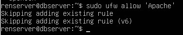

Membuat Website Wordpress Dengan Database Terpisah
Berikut Topology yang akan kita implementasikan
Anda akan menggunakan OS Ubuntu Server 20.04 LTS dan memanfaatkan VMware Workstation.
Untuk Network Adapter gunakan Host Only agar dua Guest dapat terhubung dan NAT agar Guest dapat terhubung ke jaringan internet.
Dan pastikan antar database server dan web server dapat terhubung, dengan cara lakukan ping

Bukti telah terhubung.
Dari webserver ping ke database server
Ping dari database serve ke web server
1. Membuat Database Server :
a. Install Apache2
Source: [https://www.digitalocean.com/community/tutorials/how-to-install-the-apache-web-server-on-ubuntu-20-04-id]
- Update OS terlebih dahulu, agar semua packet dengan versi terbaru. Jalankan perintah sudo apt update lalu sudo apt install apache2.
- Menyesuaikan firewall, Uncomplicated Firewall (UFW) adalah sebuah interface dari Linux iptables.
Melihat daftar profil aplikasi UFW
*) NB: FPenjelasan dari setiap aplikasi UFW
Lalu aktifkan yang Apache dan aktifkan UFW

- Melihat status dari apache2 dengan perintah sudo systemctl status apache2
Lalu akses ip server untuk mengonfirmasi bahwa perangkat lunak berjalan dengan baik melalui alamat IP Anda http://your_server_ip
b. Install PHP
Source: [https://www.digitalocean.com/community/tutorials/how-to-install-linux-apache-mysql-php-lamp-stack-on-ubuntu-20-04-id]
Agar kita bisa menjalankan Web Framework ataupun CMS yang dibangun dengan PHP seperti Laravel, Wordpress, Drupal, Moodle, dll. Maka selanjutnya kita lakukan instalasi PHP pada Ubuntu 20.04 LTS kita.
- Install Packet PHP
Anda akan memerlukan php-mysql, suatu modul PHP yang memungkinkan PHP berkomunikasi dengan basis data yang berbasis MySQL. Anda juga akan memerlukan libapache2-mod-php untuk memungkinkan Apache menangani berkas PHP.
Lalu lakukan pengecekkan mengenai versi berapa yang telah terinstall
- Melakukan pengecekkan apakah web server sudah support php atau belum dengan menggunakan script simple php. Dengan cara membuat file baru, jalankan perintah sudo nano /var/www/html/info.php
Lalu lakukan pengecekkan http://ip_server/info.php
c. Install MySQL-Server
Source: [https://www.digitalocean.com/community/tutorials/how-to-install-linux-apache-mysql-php-lamp-stack-on-ubuntu-20-04-id]
Paket mysql-server memungkinkan untuk menjalankan server MySQL yang dapat meng-host beberapa basis data dan memproses permintaan pada basis data tersebut. Server mysql digunakan untuk mempertahankan data dan menyediakan antarmuka kueri untuk itu (SQL).
- Install packet mysql-server, jalankan command sudo apt install mysql-server
- Setelah itu coba lakukan login kedalam mysql, dengan perintah sudo mysql
d. Install PhpMyAdmin
Source: [https://zonabiner.com/tutorial/ubuntu/install-lampp-apache2-php-mysql-ubuntu-20-04]
- Anda disarankan untuk menginstal paket-paket ini ke server Anda untuk mengaktifkan fungsionalitas tertentu dan meningkatkan kinerja.
Penjelasan mengenai packet:
- Opsi yang Anda harus pilih saat diminta untuk mengonfigurasi instalasi Anda. Pilih yang apache dengan tekan space lalu tekan enter.
- Proses instalasi ini menambahkan berkas konfigurasi phpMyAdmin Apache ke dalam direktori /etc/apache2/conf-enabled/, di mana berkas konfigurasi tersebut terbaca secara otomatis. Untuk itu secara eksplisit mengaktifkan ekstensi PHP mbstring
Mulai ulang Apache supaya perubahan Anda dapat dikenali
- Secara default mysql menggunakan auth_socket untuk login.
Dengan demikian kita harus mengubah auth_socket menjadi mysql_native_password dan memberikan password kepada user root.
Perintah flush privileges digunakan untuk mengaktifkan perubahan-perubahan yang terjadi pada user, seperti hak akses, penggantian password pada user, dsb.
- Coba login ke phpMyAdmin dengan user root dan password yang baru dibuat tadi.
Sekian dan Terimakasih
Silahkan pilih menu Webserver and Connection untuk melanjutkan tutorial